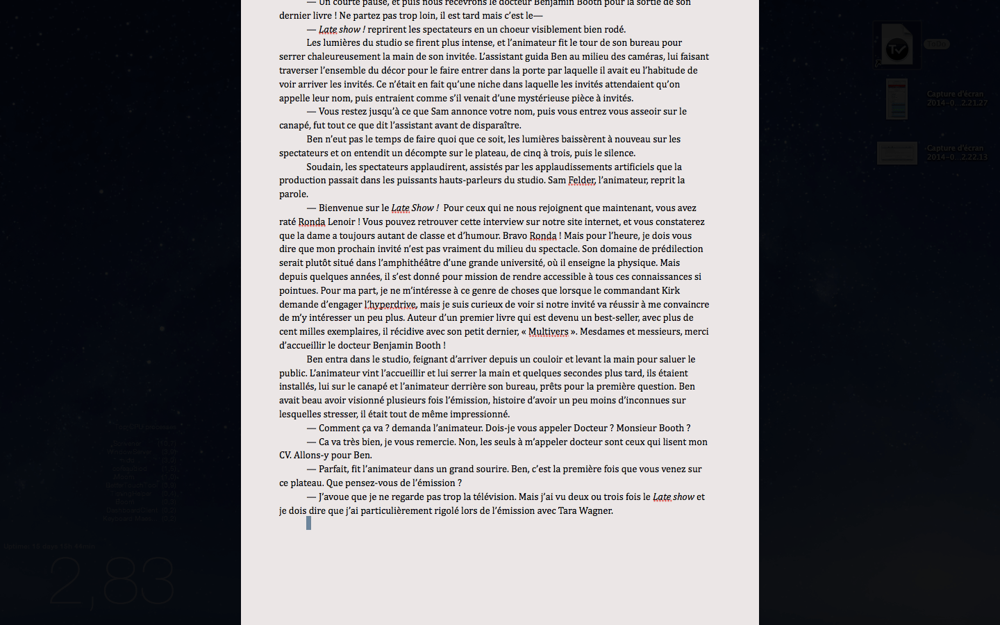
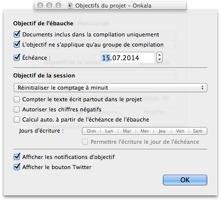
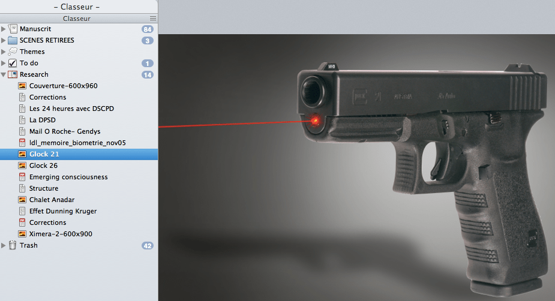
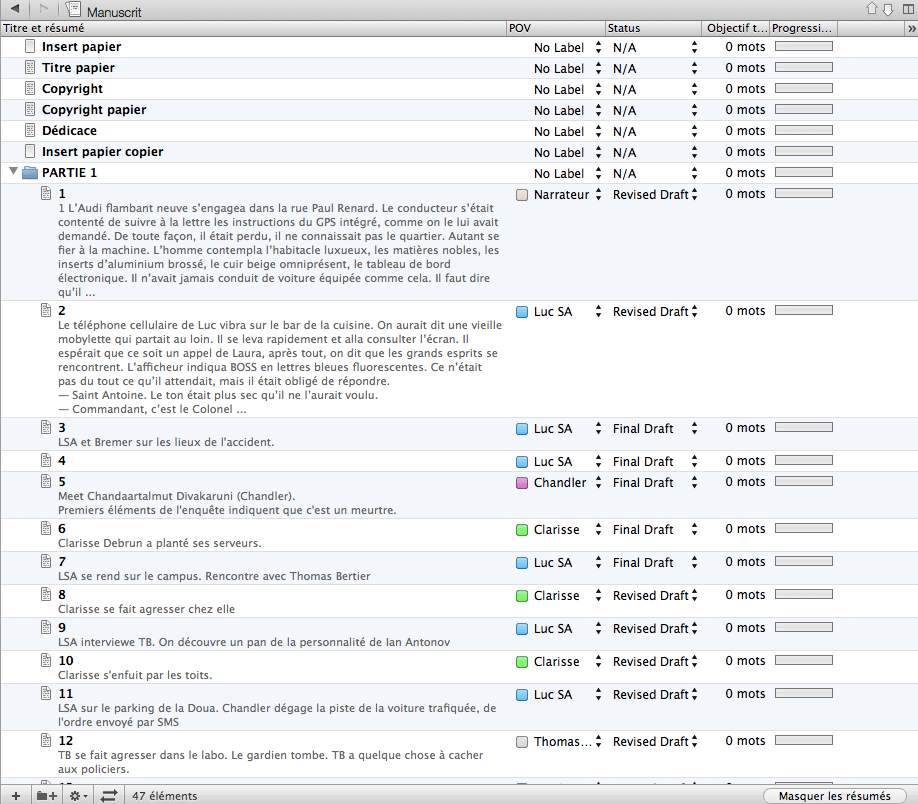
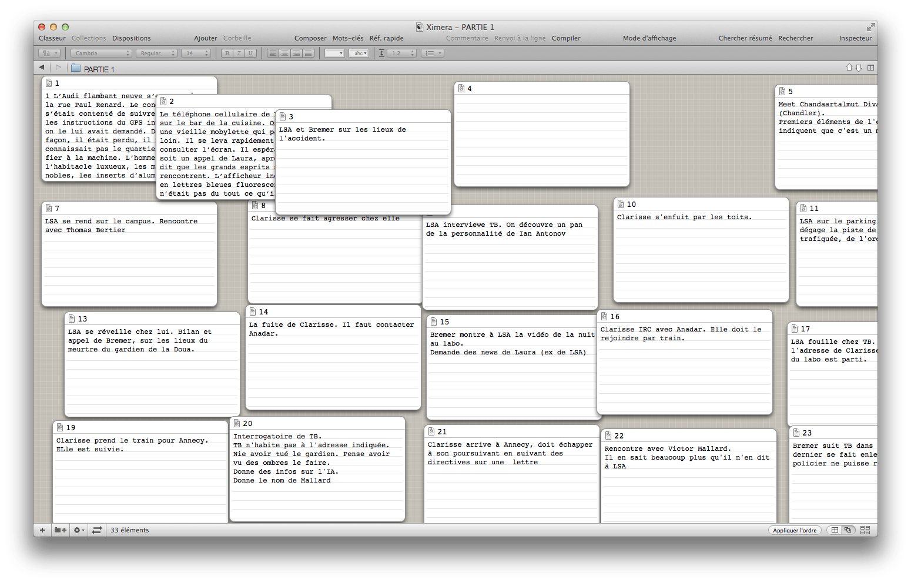

Dans les marges
Le blog personnel de l'auteur Cyril Vallée.
7 points-clés où Scrivener m’aide à écrire mes fictions
J’ai découvert Scrivener courant 2009 et j’ai rapidement acheté la version 1.4 ; ce logiciel qui peut paraître rebutant aux yeux de certains a réellement changé ma vie d’auteur. Je suis intimement persuadé qu’il a joué un grand rôle dans le fait que j’ai pu finir mon premier gros projet, Ximera.
Découvrez dans ce court article pourquoi, en sept points fondamentaux.
1 – Rester organisé et ne rien perdre
Je ne m’inquiète plus d’avoir sauvegardé mon texte, du niveau de ma batterie, ou d’un plantage du logiciel (encore que Scrivener n’a jamais planté une seule fois depuis que je l’utilise, toutes versions confondues).
Scrivener sauvegarde automatiquement et très régulièrement l’ensemble du fichier : je ne perds plus mes textes.

Quant à l’organisation : Scrivener est devenu mon fourre-tout de tout projet d’écriture. Tout est rassemblé en un seul endroit : le manuscrit, les scènes rejetées, les recherches, les fiches sur les personnages et sur les lieux, et en plus, on peut réorganiser tous les items comme on le souhaite, travailler sur la structure, en mode post-its sur tableau, en mode plan, sur le texte directement…
Exactement comme je l’aurais fait depuis un gros classeur où j’aurais tout disposé.
2 – Ecrire sans distraction
Scrivener est autant configurable que peut l’être Word, et il est très facile d’en faire un environnement d’écriture minimaliste, avec peu ou pas de distraction.
Il est aussi possible d’utiliser le mode plein écran, ou focus, ou appelez-le comme bon vous semble. L’idée est de n’avoir que son texte à l’écran, avec (si besoin) une fenêtre de référence.

3 – Remplir mes objectifs
Une solution qui fonctionne pour moi (à vous de trouver la vôtre) est de faire entrer l’écriture au rang des habitudes. Pour cela, j’ai pour objectif d’écrire un minimum de 1250 mots par jour (quoique j’ai récemment monté ce minimum à 1500).
L’idée est d’écrire, quoi qu’il arrive, envie ou pas envie, pour créer cette habitude et dégager cette difficulté qui peut parfois se présenter lorsque je commençais une nouvelle session d’écriture.
Scrivener propose un outil d’objectif tout à fait adapté et réglable aux petits oignons. On peut rentrer un objectif journalier, un objectif pour l’ensemble du projet ainsi qu’une deadline. On peut même régler l’objectif journalier pour qu’il s’adapte automatiquement pour être certain de finir le projet en temps et en heure.
Objectifs journaliers

Réglage des objectifs 
Encore une fois, ce n’est pas pour tout le monde (certains se sentent enfermés dans ce genre d’obligation), mais pour moi, c’est quelque chose qui a bien fonctionné. Scrivener m’y a beaucoup aidé.
4 – Tout au même endroit
C’est probablement le point qui m’a convaincu le plus, en tout cas à mes débuts avec ce logiciel. Scrivener accepte tout type de documents, des liens, et vous pouvez créer des dossiers résumant les recherches que vous avez faites pour votre projet.
Vous pouvez, par exemple, collecter des images Google Maps concernant une scène, des photos de maisons ou des portraits de personnages, des articles Wikipedia qui pourraient vous servir de référence.

Tout est disponible dans une seule et unique interface, et en bonus, vous pouvez utiliser la fonction « Référence rapide » pour avoir sous les yeux le document au moment où vous écrivez. Super pratique, cette option est disponible également en plein écran.
5 – Ecrire d’abord, réorganiser ensuite
Ce qui frappe également, c’est la facilité avec laquelle on peut réorganiser ses textes. Déplacer un paragraphe ? Deux clics. Un chapitre entier ? Un glisser-déposer. Enlever une scène, puis se rendre compte qu’elle est indispensable et la remettre ensuite, deux révisions plus tard ? Checked.
J’utilise pour cela un dossier spécial pompeusement nommé « scènes enlevées ». Je peux les retrouver à tout moment, que ce soit en mode « plan » ou en mode « cardboard ».
Le mode plan

Le mode cardboard 
Parcourir un texte d’une centaine de milliers de mots devient ainsi un jeu d’enfant. C’est possible dans d’autres logiciels, mais il est beaucoup plus compliqué de trouver où on a déplacé quoi, à quel endroit insérer tel ou tel paragraphe… Scrivener, sur ce point, change la donne.
6 – Révisions
Scrivener offre la possibilité de faire des instantanés de vos textes. Vous pouvez ainsi suivre les différentes modifications au fil des corrections et des différentes passes d’édition.
Cette option est configurable manuellement ou automatiquement à chaque sauvegarde du texte, et elle permet de revenir en arrière, revoir les différentes révisions et les comparer, de manière similaire à ce que ferait tout bon traitement de textes.
Révisions et instantanls dans Scrivener

7 – Création d’ebooks
C’est là un élément clé de ma vie d’auteur indépendant : lorsque tout un projet est terminé, il faut le formater et le publier d’une manière ou d’une autre. Et fabriquer un ebook, lorsque l’on a jamais ne serait-ce qu’essayé, peut être assez difficile et faire peur.
Scrivener vous aide dans ce processus, avec seulement quelques options à choisir dans une liste déroulante, ce qui vous permet de fabriquer un ebook à partir de votre manuscrit en quelques minutes.
C’est devenu mon outil de choix pour exporter en e-pub, mobi ou PDF.
Sortir un e-book avec Scrivener

Vous l’aurez compris : c’est devenu une part importante de mon travail d’auteur, un logiciel qui me simplifie la vie et m’aide à me consacrer à ce que j’aime vraiment ; raconter des histoires.
Vous pouvez vous faire une idée en téléchargeant une version d’essai sur leur site et sinon, la version complète est disponible à 45 $USD.
C’est de loin le meilleur investissement que j’ai fait (en dehors de mon Mac) en logiciel d’écriture.